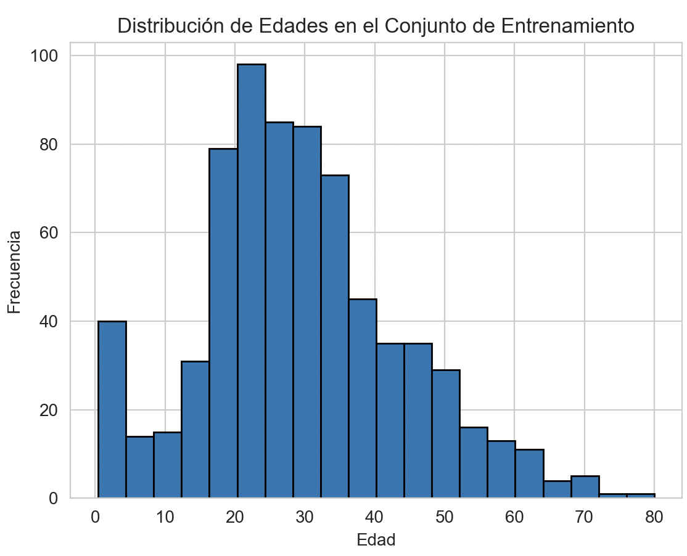
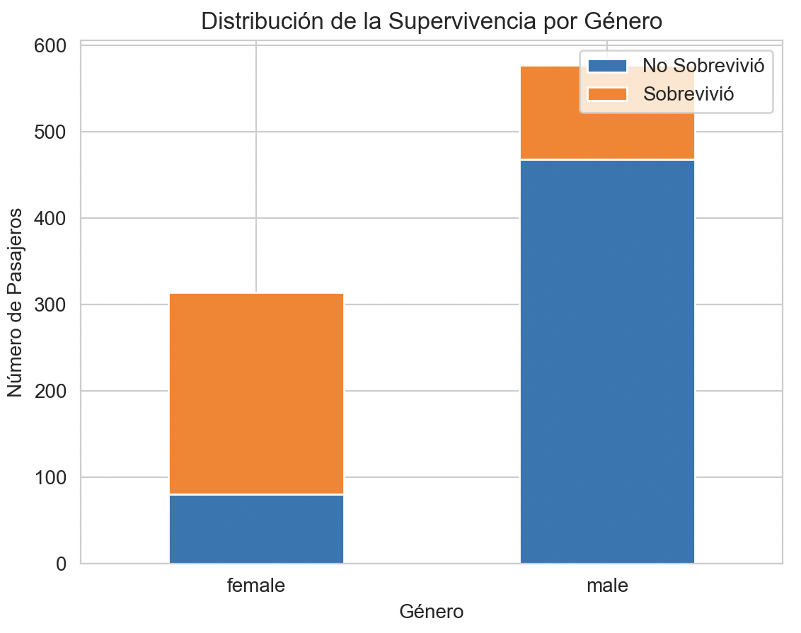
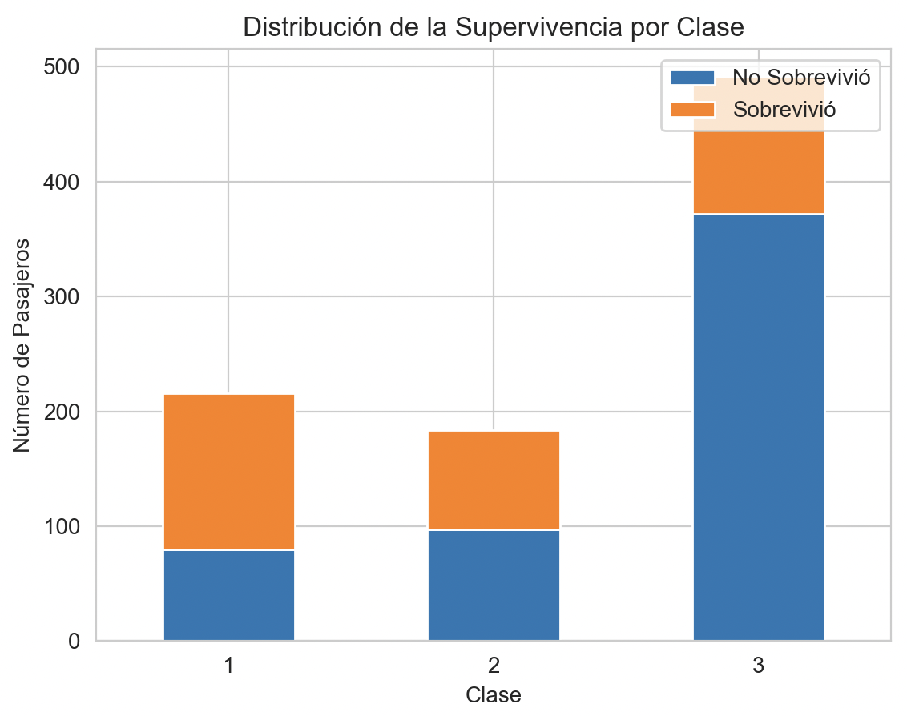
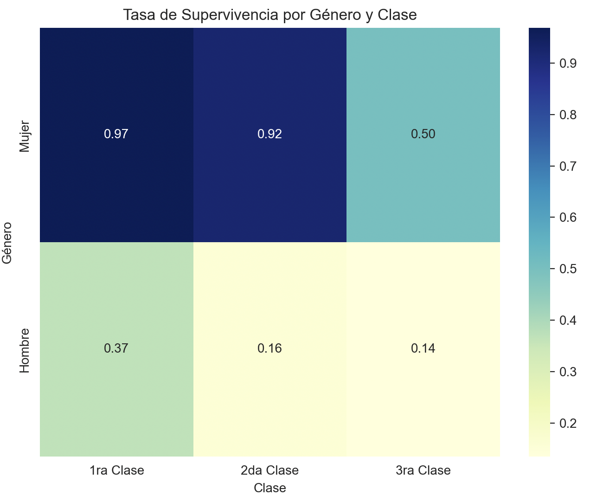
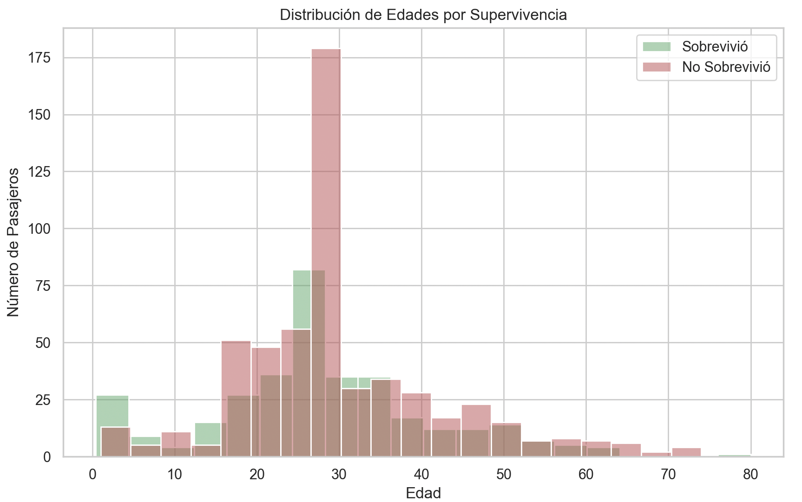

Titanic

Predicting the survival of the Titanic with RapidMiner and Python
The Titanic dataset is one of the most popular and widely used datasets in the field of data science and machine learning.This dataset is based on the famous disaster of the RMS Titanic, the iconic ship that sank on its maiden voyage in 1912 after hitting an iceberg. In this study, using data from the Kaggle dataset, we aim to build a predictive model that determines whether a passenger would survive or not based on various characteristics such as age, gender, and socioeconomic class.
Python Libraries
For this work we will use some Python libraries that will allow us to visualize, manipulate and facilitate the work with the data.
Loading of training and test data.
The first thing to do is to load data for training, this is done with the Pandas library.
gender_submission = pd.read_csv("./input/gender_submission.csv")
test_data = pd.read_csv("./input/test.csv")
train_data = pd.read_csv("./input/train.csv")As a first step before starting to work with the data, we must check how "clean" it is in terms of missing values, outliers and others.
We can give a visualization of the dataset by doing a describe() which will give us relevant information such as statistics
(total, mean, standard deviation, minimum, maximum and quartiles) of the numerical values.
We also have the head() function that allows us to preview the first rows of the dataset.
Handling of Missing Values.
Handling missing values is a crucial part of the data analysis process, because with incomplete data our analysis and models can be negatively affected.
For this case we will first perform a search for missing values in the dataset in order to define what methods or logic we will implement in order to fix these missing values.
With the isnull() function on the dataset we obtain a new dataset with boolean values instead of data, applying the sum() function will return the missing values for each of the columns.
In this case, as we can see, the train dataset has 177 missing values for the Age attribute and 687 missing values for the Cabin attribute. With these results we can now think about what actions to take to correct these values. This correction method is called Imputation.
For the Cabin values as we can see, out of a total of 891 elements, we are missing 687 elements, which is difficult to impute data considering the little information we have to be able to estimate, we also have to keep in mind the need for this data and in this case it would not give us much information as it is not a determining factor that influences the survival of a passenger.
Also at this stage we can remove the attributes that are not necessary for the case and may generate inconsistencies in the data to be analyzed, in this case we have a Ticket attribute that does not provide great value.
To remove these values we can do it with drop() on the dataset indicating the labels or columns to be removed.
train_data.drop(['Cabin','Ticket'], axis=1, inplace=True)
test_data.drop(['Cabin','Ticket'], axis=1, inplace=True)For the Cabin and Ticket attributes we decided to eliminate them since they do not provide much information and in particular Cabin had a large number of missing data, while for the Age attribute, which has missing data, we are interested in being able to somehow perform an imputation. The way in which we will determine the strategy to follow will be by looking at a graph with the distribution of the Age data.
As we can see in the graph we have a distribution with a positive skew, which if we choose to impute the age value with the mean, we can be affected by very large values, while if we use the median, it would only be slightly affected.
train_data['Age'].fillna(train_data['Age'].median(), inplace=True)
test_data['Age'].fillna(test_data['Age'].median(), inplace=True)
train_data['Embarked'].fillna("S", inplace=True)
test_data['Fare'].fillna(test_data['Fare'].median(), inplace=True)Data visualization is an essential part of data analysis, as it helps to understand patterns, trends and relationships in your data. The ability to visually identify data structures and any hidden signals is extremely crucial to properly tune the model and improve performance.
Data visualization.
We are going to use the Pandas, Matplotlib and Seaborn libraries to perform some basic visualizations of a dataset.
GenderWhen we analyze the variable "Gender", we can observe an interesting trend, the proportion of women who survived the Titanic is notably higher than that of men. This is due to the fact that during the shipwreck a "women and children first" policy was applied so that they could reach a lifeboat first. This decision probably had a major impact on the difference in survival rates between genders.
# Distribución de la supervivencia por género
survival_gender = train_data.groupby(['Sex', 'Survived']).size().unstack()
# Grafico de distribución de la supervivencia por género
survival_gender.plot(kind='bar', stacked=True, title='Distribución de la Supervivencia por Género')
plt.xlabel('Género')
plt.ylabel('Número de Pasajeros')
plt.xticks(rotation=0) # Evitar rotación de etiquetas en el eje x
plt.legend(['No Sobrevivió', 'Sobrevivió'], loc='upper right')
plt.show()
When plotting the data for the Pclass attribute, we can clearly observe that the proportion of passengers in first class is the highest, followed by second class, while passengers in third class have the lowest survival rates. This was surely due to the scarce availability of resources and access to lifeboats where priority should have been given to the higher classes.
So with this in mind, we must keep the Pclass attribute in mind as it becomes an essential attribute for our model.
# Distribución de la supervivencia por clase
survival_class = train_data.groupby(['Pclass', 'Survived']).size().unstack()
# Grafico de la Distribución de supervivencia por clase
survival_class.plot(kind='bar', stacked=True, title='Distribución de la Supervivencia por Clase')
plt.xlabel('Clase')
plt.ylabel('Número de Pasajeros')
plt.xticks(rotation=0) # Evitar rotación de etiquetas en el eje x
plt.legend(['No Sobrevivió', 'Sobrevivió'], loc='upper right')
plt.show()
We can also look at the distribution of survival by gender and passenger class to keep in mind the data mentioned above.
We can see it better in this heat map
# Tasa de supervivencia por género y clase
survival_rates = train_data.groupby(['Sex', 'Pclass'])['Survived'].mean().reset_index()
# pivot de datos para el mapa de calor
pivot_table = survival_rates.pivot_table(index='Sex', columns='Pclass', values='Survived')
# Graficar el mapa de calor
plt.figure(figsize=(8, 6))
sns.heatmap(pivot_table, annot=True, cmap="YlGnBu", fmt=".2f", cbar=True,
xticklabels=['1ra Clase', '2da Clase', '3ra Clase'],
yticklabels=['Mujer', 'Hombre'])
plt.title('Tasa de Supervivencia por Género y Clase')
plt.xlabel('Clase')
plt.ylabel('Género')
plt.show()
As we can see, being a woman and being in first class gives us a 97% chance of survival, while if we go to the other extreme, being a man and being in third class, the chances of survival were very low at 14%.
AgeIn the attribute "Age" we can observe in general that children have a significantly higher survival rate compared to adults, this is due to the prioritization of the evacuation of children, which had a higher percentage of survivors for this group.
# Subconjuntos de edades para los que sobrevivieron y los que no sobrevivieron
survived_ages = train_data[train_data.Survived == 1]["Age"].dropna()
not_survived_ages = train_data[train_data.Survived == 0]["Age"].dropna()
# Estilo de Seaborn
sns.set(style="whitegrid")
# gráfico de histograma para las distribuciones de edad
plt.figure(figsize=(10, 6))
sns.histplot(survived_ages, bins=20, color='g', label='Sobrevivió', alpha=0.5)
sns.histplot(not_survived_ages, bins=20, color='r', label='No Sobrevivió', alpha=0.5)
plt.title('Distribución de Edades por Supervivencia')
plt.xlabel('Edad')
plt.ylabel('Número de Pasajeros')
plt.legend()
plt.show()